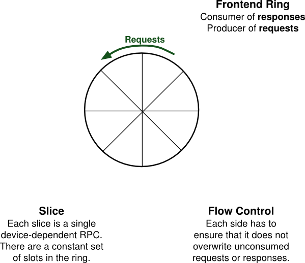
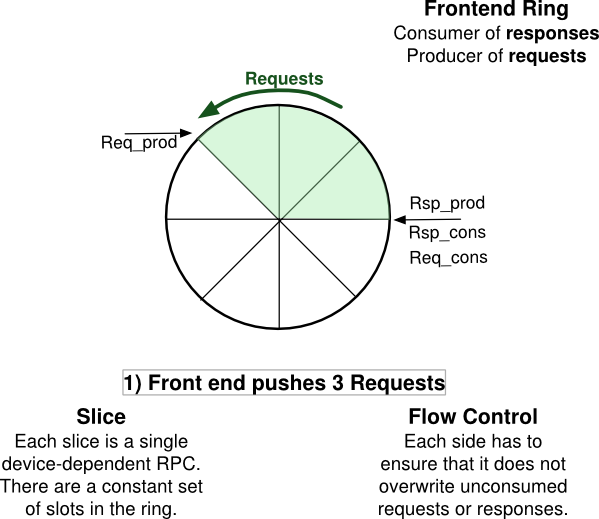
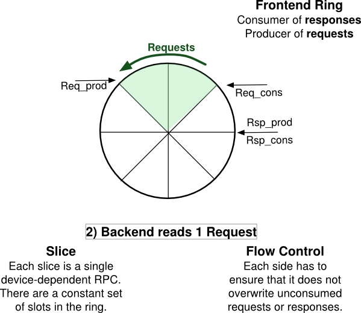
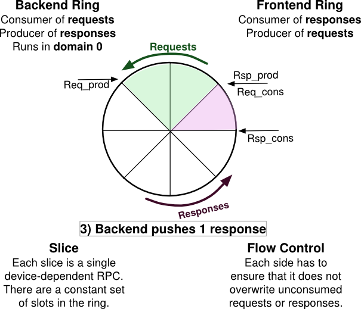
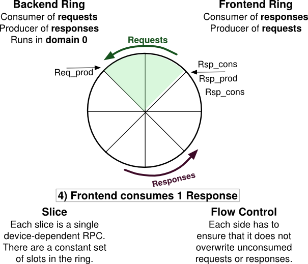

This information is based on the
Mirage tutorial
given at
CUFP 2011
by
Anil Madhavapeddy.
David Scott and
Thomas Gazagnaire.
The Primitives
Xen devices are built from the following low-level primitives:
Memory pages
These are the basic unit of memory exposed to guests. Note that xen supports pages of different sizes (see superpages) but for the rest of this article I will talk about 4KiB pages.
Grants
Xen allows guests to grant read-only or read-write access to other guests. This allows memory to be moved or shared between guests.
Grants are stored in Grant tables which are blocks of memory with a special format. These tables are shared between the Guests and Xen.
References:
Event channels
An event channel is a mechanism to signal a remote domain, which looks similar to a hardware interrupt. Event channels are typically used to signal when fresh data is available in some shared memory pages.
References:
Rings
Xen devices construct rings which are used for request/response (RPC-like) communication. A ring normally fits within a single 4KiB page. The page contains a header and a power-of-two number of fixed-size slots. Rings are shared between two peers, one of whom will write requests while the other only writes responses.
Note there are some blkfront/back patches to allow a ring to be split across multiple pages, to allow larger numbers of outstanding requests. This is considered particularly important for block I/O against high-performance targets such as expensive FC arrays or local SSD storage.
A Ring with no requests or responses
This is the initial state where no requests or responses have been sent ("pushed"). We adopt the convention that requests are written anti-clockwize around the ring, as indicated by the arrow. Note the contents of each slice depends on the higher-level protocol in use (xenbus, network, block).

Pushing requests to the Ring

Pushing a response to the Ring

Receiving a response

